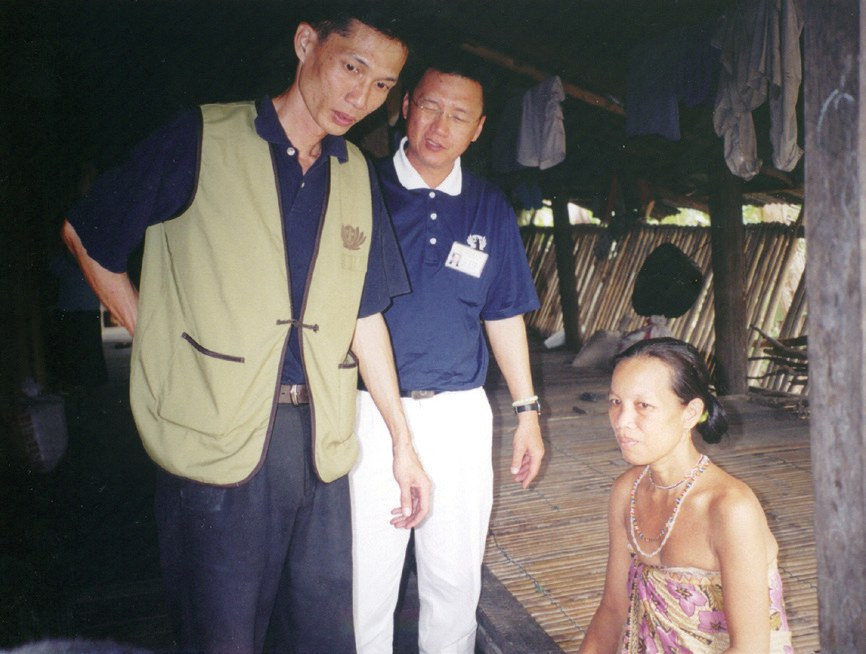
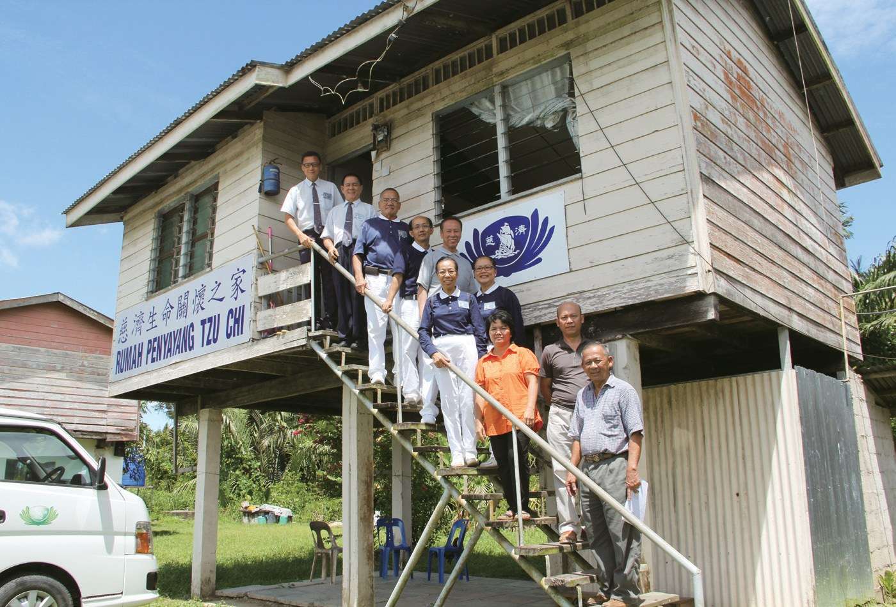
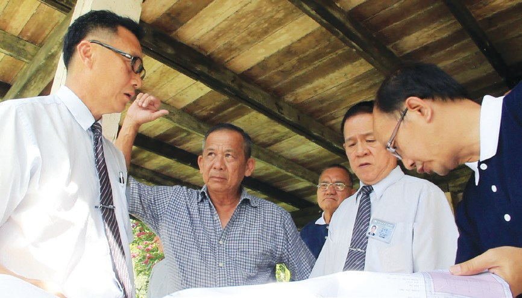
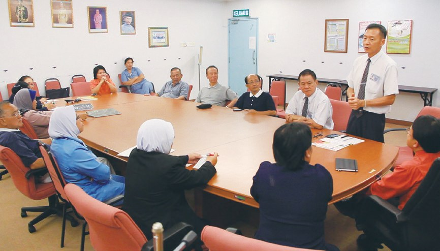
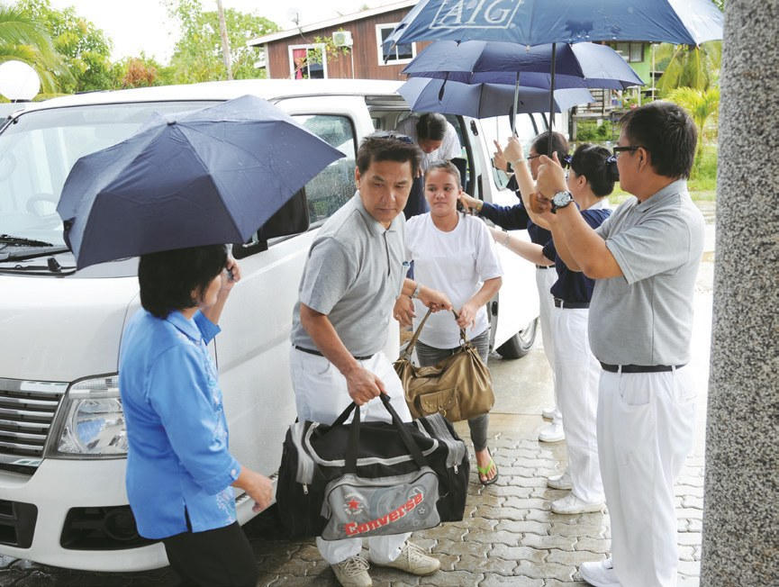
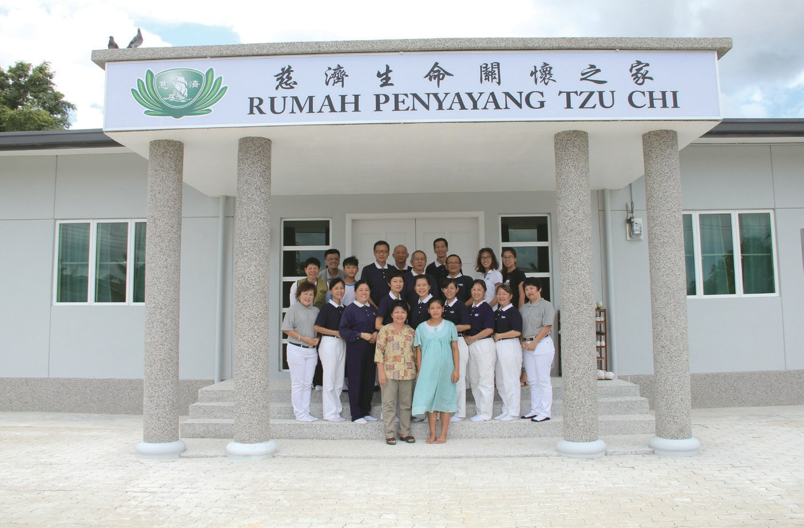
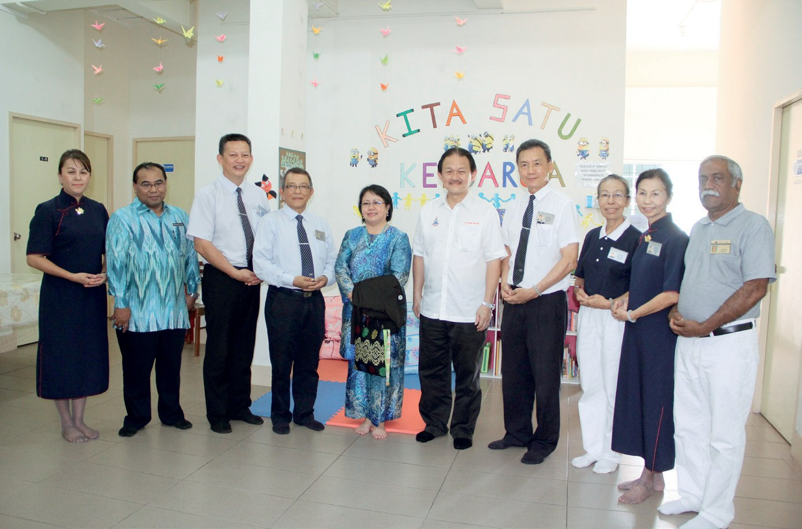
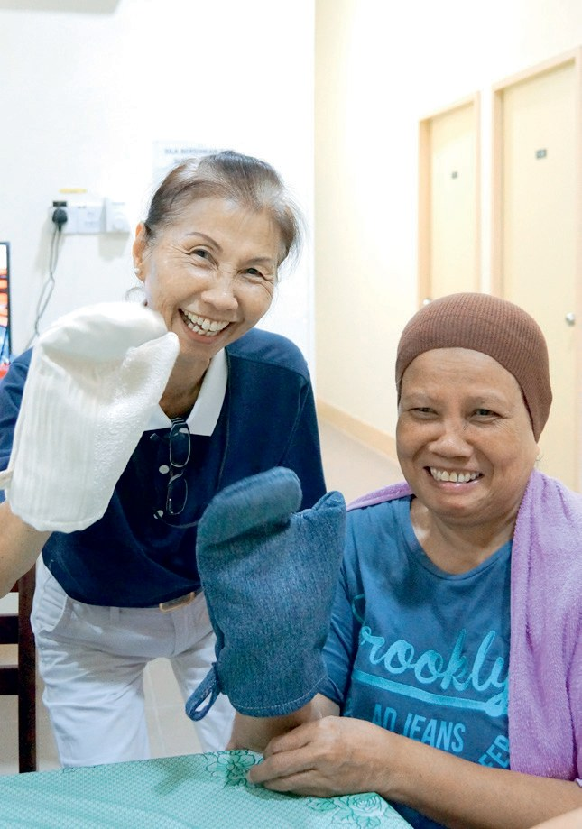

安心待產
守護生命
懷孕要生了，醫院卻在兩天山路之外，怎麼辦？

先別急著下結論，讀完再說說你的想法～
這一篇講沙巴的兩間「慈濟生命關懷之家」：比打士的一間讓山區孕婦安心待產，里卡士的一間讓偏鄉病童和家屬有地方住。
你會認識一位雜貨店老闆娘，她五十歲去考駕照，只為了接送產婦。
下面是原書的節錄，紅色底線是我們替你標出的轉折點。
讀之前：你覺得一個「家」，最重要的是什麼？
走兩天山路去產檢
為什麼比打士的孕婦，生孩子這麼危險？閱讀引導
他們發現當地孕婦若要做產前檢查，需要翻山越嶺，有時甚至得步行兩天的山路，穿越溪河，才能抵達診療所。

要走兩天山路！
生產傾向傳統方式，以削尖的竹片割斷臍帶，再以草藥作為傷口的敷料，容易導致傷口感染。
護士法麗達回憶，她曾安排一位定期產檢的孕婦到哥打馬魯都診療所待產，卻因床位不足又被遣送回家。事後她追蹤孕婦下落，才知對方已因難產而過世。

卻沒有床位……
又加上相關法條規定，未到臨盆時間的孕婦不具備病人身分，無法享有床位福利；……種種的因素，使這裡成為馬來西亞孕婦死亡比率最高的地方。
鄭榮輝醫師因參與慈濟的義診，見證志工不畏長途跋涉，還自掏腰包做慈善的真誠付出，因而向慈濟提出成立「待產之家」的構想，以庇護這些受盡磨難的準媽媽。


才提出這個想法！
經過多方尋找，志工終於覓得離比打士診療所僅五分鐘車程的高腳屋，懇請屋主山蘇丁將房子租給慈濟，以作為安頓臨產媽媽之用。
5月1日待產之家正式啟用，第二天就迎來第一位入住的準媽媽多麗羅……

五十歲去考駕照
孕婦怎樣住進來？誰在這個「家」裡照顧她們？閱讀引導
萊娜回憶某一次生產，是在十二歲女兒陪同下，在凌晨兩點打著火把，翻山越嶺走了五小時，才搭上貨車，到接近市區的地方接受巡迴醫師的助產。
走了五個小時！
篩選後，評估團成員再為高危險孕婦填表推薦，讓她們可以在臨產期前，憑著醫師簽核的表格，免費入住「慈濟生命關懷之家」。
「自從有了生命關懷之家之後，不僅可以讓醫護人員放心，也提升了我對人的關愛態度，慈濟是我們最大的後盾。」
護士科麗絲娜說・p.147亞庇志工只好請求生命關懷之家隔壁雜貨店的老闆娘露茜協助。露茜被慈濟關懷山區孕婦的精神所感動，遂發心接下這分不輕鬆的任務……

願意接下這個任務？
最初，露茜從見到產婦疼痛難耐的景象就全身發抖，擔心她們沒辦法順利安產；如今的她已經可以處變不驚地面對各種情況，儼然成為當地產婦們的守護天使，十年來的付出不曾間斷。
猜一猜閱讀引導
露茜五十歲的時候，為了方便接送產婦到醫院，去做了什麼？
「我們不只是專注在孕婦的身體狀況，也要照顧她們的心。我的任務是二十四小時待命，因為孕婦生產不分晝夜，但我願意奉獻我的時間給慈濟。」
露茜說・p.148當地部落有各種方言，為了能和孕婦簡單的溝通，露茜因此學習好幾種方言。……露茜於心不忍，主動承擔起烹煮餐點的責任。

二十四小時待命！
「每天存五毛錢，積少成多就可以救人。一分善念就是一分祝福，幫助別人的同時也是在祝福自己。」
志工翁敦學分享「竹筒歲月」的精神・p.148聽了志工的分享，有些孕婦立即掏錢投入愛心竹筒，歡喜響應。
一令吉轉租的土地
高腳屋老了，孕婦上下樓梯不方便。重建時，孕婦住哪裡？閱讀引導
但由於該區地段屬於當地原住民用地，按法規無法輕易轉讓或變賣；……2013年1月，鄭月芳以象徵式馬幣1令吉將地點轉租給慈濟，生命關懷之家的原址重建申請總算落定。
只收一令吉！

「守護生命的地方，要很謹慎，若有絲毫差錯，可能會影響生命關懷之家的功能。」
負責監工的志工張文翔表示・p.150院長尼紮姆感動慈濟人的付出，同意將醫院的訪客宿舍規劃給待產媽媽暫住。

「比起你們，我們只是扮演一個小角色。若非慈濟人的堅持，生命關懷之家無法走過十年的時光。」
院長尼紮姆表示・p.150也說自己是小角色！

2015年7月31日，初為人母的米爾維也納請志工替女兒取名為慈喜……作為紀念「慈濟生命關懷之家」第一千個生命誕生的喜悅。
名字叫「慈喜」！

病童的中途之家
偏鄉的孩子要到亞庇看病，回診一次要花多少錢？閱讀引導
長期需要定期回診的病患，因為沒辦法支付反覆往返的車資或生活費，只能延後回診，減少支出，更有的人只能放棄治療……
只好放棄治療……
有鑑於此，里卡士中央醫院小兒科主任蘇天然醫師在2008年時致函慈濟，請求慈濟能於醫院就近地區設立「中途之家」
上人慈示可以採用房屋租賃的方式，並委由醫院管理、照護，而志工可以定期關懷，援助病人生活所需物資。
2015年才成立……
中途之家的運作由慈濟、里卡士醫院與TKPM三方合作，慈濟承擔租金、日常開銷及舍監的薪資；醫院則負責中途之家病患的健康責任；TKPM則協助日常管理與行政作業。

有一次，住戶們得知慈濟將為根地咬醫院擴建洗腎中心，便通力合作，花了三個月的時間完成一條百家被，請志工拿去義賣。
也縫被子幫別人！

慈濟人為了這些孕婦，蓋了一個中途之家，叫做比打士生命關懷之家，一棟守護母嬰都能平安健康的房屋。
上人讚歎・p.156- 2,041人次待產孕婦住進比打士生命關懷之家p.156
- 1,658名新生兒誕生p.156
- 1,647人次病患住進里卡士生命關懷之家p.156
2026年，鏡頭回到比打士，看看這間中途之家守護了多少寶寶。
這並非全然是奇蹟，而是慈濟人無怨無悔守護生命的成就。
原文・p.156停一停：誰讓你記住了？閱讀引導
選一位你印象最深的人。沒有標準答案。
有人提出構想，有人一令吉租出土地，有人二十四小時待命。哪一位讓你最有感覺？

一起回頭看看吧～
回望
依本章原文整理，每一條都標了原書頁碼。閱讀引導
背後原因
為什麼要待產之家

小川孕婦直接去醫院生，不就好了嗎？
- 路太遠
產檢有時得步行兩天的山路，穿越溪河。p.143
- 沒有床位
未到臨盆時間的孕婦，無法享有床位福利。p.144
- 先住下來等
在診療所附近安心待產，順利生產。p.145–146
後續發展
生命關懷之家一路走來

小禾從一間租來的高腳屋開始，走了多久？
- 2002
首次到比打士舉辦大型原住民義診。p.143
- 2003
待產之家啟用，命名「慈濟生命關懷之家」。p.145
- 2006
比打士政府醫院啟用，只差五分鐘車程。p.149
- 2014
重建落成，迎接第一批孕婦。p.150–151
- 2015
第一千個寶寶慈喜誕生；里卡士生命關懷之家成立。p.151、p.154
- 2018
里卡士生命關懷之家開幕典禮。p.155
一個家
照顧了誰
小川一間房子，可以照顧到多少人？
- 第一圈孕婦
萊娜在診療所附近安心待產，順利生產。p.146
- 第二圈護士
科麗絲娜：「慈濟是我們最大的後盾。」p.147
- 第三圈新生兒
截至2022年，迎接1,658名新生兒。p.156
- 第四圈病童家庭
里卡士接待病患1,647人次。p.156
以上只整理本章寫到的事；書裡沒寫到的，我們不替它下結論。
回頭看讀前的選擇閱讀引導
志工找的高腳屋離診療所只有五分鐘車程（p.145）；露茜說要「照顧她們的心」（p.148）；重建後有十個床位（p.150–151）。三樣都有了，你覺得哪一樣讓孕婦最安心？
為什麼大家叫她守護天使？
只有你自己看得到喔！
準備好了就一起出發～